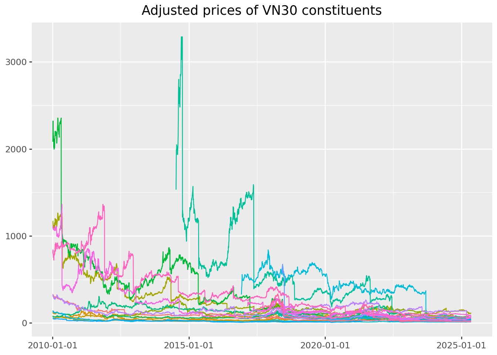
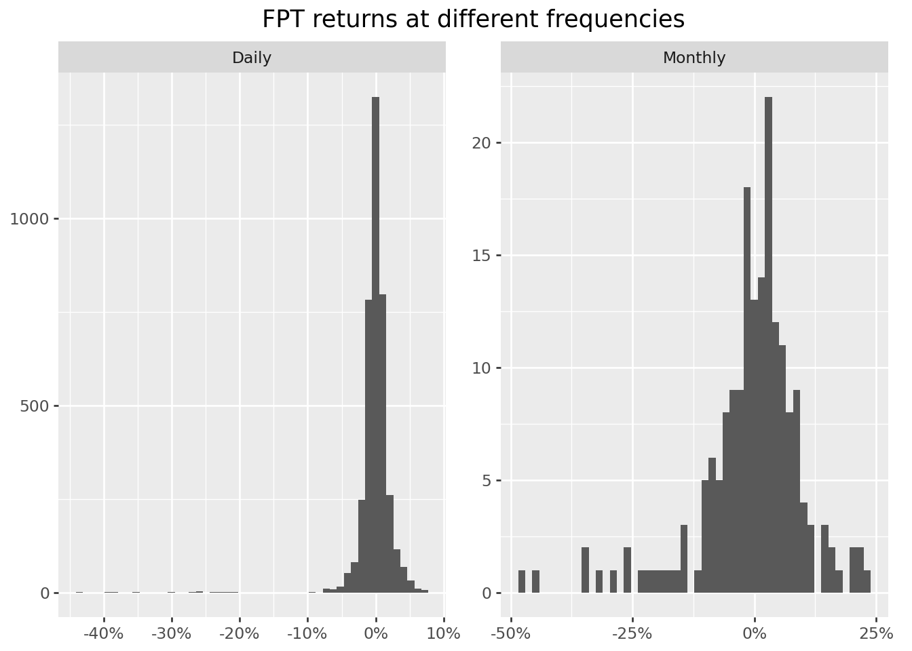

import pandas as pd
import numpy as np2 Constructing and Analyzing Equity Return Series
This chapter develops a practical framework for transforming raw equity price records into return series suitable for empirical financial analysis. The focus is on methodological clarity and reproducibility, with particular attention to data issues that are prevalent in emerging equity markets such as Vietnam.
The discussion proceeds from individual stocks to a broad market cross-section, using constituents of the VN30 index as the primary empirical setting.
2.1 Data Access and Preparation
We begin by loading the core numerical and data manipulation libraries. These provide all functionality required for return construction without relying on specialized financial wrappers.
Historical price data are stored in an S3-compatible object storage system. Access credentials are supplied via environment variables, which keeps sensitive information separate from the analysis and supports collaborative reproducibility.
import os
import boto3
from botocore.client import Config
class ObjectStorage:
def __init__(self):
self.client = boto3.client(
"s3",
endpoint_url=os.environ["MINIO_ENDPOINT"],
aws_access_key_id=os.environ["MINIO_ACCESS_KEY"],
aws_secret_access_key=os.environ["MINIO_SECRET_KEY"],
region_name=os.getenv("MINIO_REGION", "us-east-1"),
config=Config(signature_version="s3v4"),
)
storage = ObjectStorage()
bucket = os.environ["MINIO_BUCKET"]The daily price file is read directly into memory. We explicitly parse dates and harmonize variable names to avoid ambiguity in later steps.
from io import BytesIO
prices = pd.read_csv(
BytesIO(
storage.client.get_object(
Bucket=bucket,
Key="historycal_price/dataset_historical_price.csv",
)["Body"].read()
),
low_memory=False,
)
prices["date"] = pd.to_datetime(prices["date"])
prices["adjusted_close"] = prices["close_price"] * prices["adj_ratio"]
prices = prices.rename(
columns={
"vol_total": "volume",
"open_price": "open",
"low_price": "low",
"high_price": "high",
"close_price": "close",
}
)
prices = prices.sort_values(["symbol", "date"])Adjusted closing prices incorporate mechanical changes due to corporate actions such as cash dividends and stock splits. Using adjusted prices ensures that subsequent return calculations reflect investor-relevant performance rather than accounting artifacts.
2.2 Examining a Single Equity
To ground the discussion, we isolate the trading history of a single large-cap stock, FPT, over a long sample period.
import datetime as dt
start = pd.Timestamp("2000-01-01")
end = pd.Timestamp(dt.date.today().year - 1, 12, 31)
fpt = prices.loc[
(prices["symbol"] == "FPT")
& (prices["date"] >= start)
& (prices["date"] <= end),
["date", "symbol", "volume", "open", "low", "high", "close", "adjusted_close"],
].copy()This subset contains the standard daily market variables required for most empirical studies. Before computing returns, it is good practice to visually inspect the price series.
from plotnine import ggplot, aes, geom_line, labs(
ggplot(fpt, aes(x="date", y="adjusted_close"))
+ geom_line()
+ labs(title="Adjusted price path of FPT", x="", y="")
)
2.3 From Prices to Returns
Most empirical asset pricing models are formulated in terms of returns rather than price levels. The simple daily return is defined as
\[ r_t = \frac{p_t}{p_t - 1} - 1, \]
where \(p_t\) denotes the adjusted closing price at the end of trading day \(t\).
Before computing returns, we must address invalid price observations. In Vietnamese equity data, adjusted prices occasionally take the value zero. These entries typically arise from IPO placeholders, trading suspensions, or historical backfilling conventions and cannot be used to compute meaningful returns.
prices.loc[prices["adjusted_close"] <= 0, ["symbol", "date", "adjusted_close"]].head()| symbol | date | adjusted_close | |
|---|---|---|---|
| 33886 | ADP | 2010-02-09 | 0.0 |
| 33887 | ADP | 2010-02-24 | 0.0 |
| 33888 | ADP | 2010-03-01 | 0.0 |
| 33889 | ADP | 2010-03-03 | 0.0 |
| 33890 | ADP | 2010-03-12 | 0.0 |
We therefore exclude non-positive adjusted prices and compute returns stock by stock. Correct chronological ordering is essential.
returns = (
prices
.loc[prices["adjusted_close"] > 0]
.sort_values(["symbol", "date"])
.assign(ret=lambda x: x.groupby("symbol")["adjusted_close"].pct_change())
[["symbol", "date", "ret"]]
)
returns = returns.dropna(subset=["ret"])The initial return for each stock is missing by construction, since no lagged price is available. These observations are mechanical and can safely be removed in most applications.
2.4 Limiting the Influence of Extreme Returns
Daily return series often contain extreme observations driven by data errors, thin trading, or abrupt price adjustments. A common approach is to winsorize returns using cross-sectional percentile cutoffs.
def winsorize_cs(df, column="ret", lower_q=0.01, upper_q=0.99):
lo = df[column].quantile(lower_q)
hi = df[column].quantile(upper_q)
out = df.copy()
out[column] = out[column].clip(lo, hi)
return out
returns = winsorize_cs(returns)Applying winsorization across the full cross-section limits the impact of extreme market-wide observations while preserving relative differences between firms. Winsorizing within each stock is rarely appropriate in panel settings and can severely distort illiquid securities.
2.5 Distributional Features of Returns
We next examine the empirical distribution of daily returns for FPT. The figure below also marks the historical 5 percent quantile, which provides a simple, non-parametric measure of downside risk.
from mizani.formatters import percent_format
from plotnine import geom_histogram, geom_vline, scale_x_continuous
fpt_ret = returns.loc[returns["symbol"] == "FPT"].copy()
q05 = fpt_ret["ret"].quantile(0.05)(
ggplot(fpt_ret, aes(x="ret"))
+ geom_histogram(bins=100)
+ geom_vline(xintercept=q05, linetype="dashed")
+ scale_x_continuous(labels=percent_format())
+ labs(title="Distribution of daily FPT returns", x="", y="")
)
Summary statistics offer a compact description of return behavior and should always be inspected before formal modeling.
returns["ret"].describe().round(3)count 4305063.000
mean 0.000
std 0.035
min -0.125
25% -0.004
50% 0.000
75% 0.003
max 0.130
Name: ret, dtype: float64Computing these statistics by calendar year can reveal periods of elevated volatility or structural change.
(
returns
.assign(year=lambda x: x["date"].dt.year)
.groupby("year")["ret"]
.describe()
.round(3)
)| count | mean | std | min | 25% | 50% | 75% | max | |
|---|---|---|---|---|---|---|---|---|
| year | ||||||||
| 2010 | 131548.0 | -0.001 | 0.036 | -0.125 | -0.021 | 0.0 | 0.018 | 0.13 |
| 2011 | 166826.0 | -0.003 | 0.033 | -0.125 | -0.020 | 0.0 | 0.011 | 0.13 |
| 2012 | 177938.0 | 0.000 | 0.033 | -0.125 | -0.012 | 0.0 | 0.015 | 0.13 |
| 2013 | 180417.0 | 0.001 | 0.033 | -0.125 | -0.004 | 0.0 | 0.008 | 0.13 |
| 2014 | 181907.0 | 0.001 | 0.034 | -0.125 | -0.008 | 0.0 | 0.011 | 0.13 |
| 2015 | 197881.0 | 0.000 | 0.033 | -0.125 | -0.006 | 0.0 | 0.005 | 0.13 |
| 2016 | 227896.0 | 0.000 | 0.035 | -0.125 | -0.005 | 0.0 | 0.003 | 0.13 |
| 2017 | 283642.0 | 0.001 | 0.034 | -0.125 | -0.002 | 0.0 | 0.001 | 0.13 |
| 2018 | 329887.0 | 0.000 | 0.035 | -0.125 | 0.000 | 0.0 | 0.000 | 0.13 |
| 2019 | 352754.0 | 0.000 | 0.033 | -0.125 | 0.000 | 0.0 | 0.000 | 0.13 |
| 2020 | 369367.0 | 0.001 | 0.035 | -0.125 | 0.000 | 0.0 | 0.000 | 0.13 |
| 2021 | 379415.0 | 0.002 | 0.038 | -0.125 | -0.005 | 0.0 | 0.007 | 0.13 |
| 2022 | 387050.0 | -0.001 | 0.038 | -0.125 | -0.008 | 0.0 | 0.004 | 0.13 |
| 2023 | 391605.0 | 0.001 | 0.034 | -0.125 | -0.002 | 0.0 | 0.002 | 0.13 |
| 2024 | 400379.0 | 0.000 | 0.031 | -0.125 | -0.002 | 0.0 | 0.000 | 0.13 |
| 2025 | 146551.0 | 0.000 | 0.037 | -0.125 | -0.004 | 0.0 | 0.002 | 0.13 |
2.6 Expanding to a Market Cross-Section
The same procedures apply naturally to a larger universe of stocks. We now restrict attention to the constituents of the VN30 index.
vn30 = [
"ACB","BCM","BID","BVH","CTG","FPT","GAS","GVR","HDB","HPG",
"MBB","MSN","MWG","PLX","POW","SAB","SHB","SSB","STB","TCB",
"TPB","VCB","VHM","VIB","VIC","VJC","VNM","VPB","VRE","EIB",
]
prices_vn30 = prices.loc[prices["symbol"].isin(vn30)]
from plotnine import theme(
ggplot(prices_vn30, aes(x="date", y="adjusted_close", color="symbol"))
+ geom_line()
+ labs(title="Adjusted prices of VN30 constituents", x="", y="")
+ theme(legend_position="none")
)

Returns for the VN30 universe are computed analogously.
returns_vn30 = (
prices_vn30
.sort_values(["symbol", "date"])
.assign(ret=lambda x: x.groupby("symbol")["adjusted_close"].pct_change())
[["symbol", "date", "ret"]]
.dropna()
)
returns_vn30.groupby("symbol")["ret"].describe().round(3)| count | mean | std | min | 25% | 50% | 75% | max | |
|---|---|---|---|---|---|---|---|---|
| symbol | ||||||||
| ACB | 3822.0 | -0.000 | 0.023 | -0.407 | -0.006 | 0.0 | 0.007 | 0.097 |
| BCM | 1795.0 | 0.001 | 0.027 | -0.136 | -0.010 | 0.0 | 0.010 | 0.159 |
| BID | 2811.0 | 0.000 | 0.024 | -0.369 | -0.010 | 0.0 | 0.011 | 0.070 |
| BVH | 3825.0 | 0.000 | 0.024 | -0.097 | -0.012 | 0.0 | 0.012 | 0.070 |
| CTG | 3825.0 | 0.000 | 0.024 | -0.376 | -0.010 | 0.0 | 0.010 | 0.070 |
| EIB | 3825.0 | -0.000 | 0.022 | -0.302 | -0.008 | 0.0 | 0.008 | 0.070 |
| FPT | 3825.0 | -0.000 | 0.024 | -0.439 | -0.008 | 0.0 | 0.009 | 0.070 |
| GAS | 3236.0 | 0.000 | 0.022 | -0.289 | -0.009 | 0.0 | 0.010 | 0.070 |
| GVR | 1775.0 | 0.001 | 0.030 | -0.137 | -0.014 | 0.0 | 0.016 | 0.169 |
| HDB | 1828.0 | -0.001 | 0.028 | -0.391 | -0.009 | 0.0 | 0.010 | 0.070 |
| HPG | 3825.0 | -0.001 | 0.032 | -0.581 | -0.010 | 0.0 | 0.011 | 0.070 |
| MBB | 3371.0 | -0.000 | 0.023 | -0.473 | -0.008 | 0.0 | 0.008 | 0.069 |
| MSN | 3825.0 | 0.000 | 0.024 | -0.553 | -0.010 | 0.0 | 0.010 | 0.070 |
| MWG | 2701.0 | -0.000 | 0.035 | -0.751 | -0.009 | 0.0 | 0.011 | 0.070 |
| PLX | 2009.0 | -0.000 | 0.021 | -0.140 | -0.010 | 0.0 | 0.010 | 0.070 |
| POW | 1784.0 | 0.000 | 0.023 | -0.071 | -0.012 | 0.0 | 0.011 | 0.102 |
| SAB | 2100.0 | -0.000 | 0.024 | -0.745 | -0.008 | 0.0 | 0.007 | 0.070 |
| SHB | 3824.0 | -0.000 | 0.028 | -0.338 | -0.013 | 0.0 | 0.013 | 0.100 |
| SSB | 1029.0 | -0.000 | 0.023 | -0.292 | -0.005 | 0.0 | 0.004 | 0.070 |
| STB | 3825.0 | 0.000 | 0.024 | -0.321 | -0.010 | 0.0 | 0.010 | 0.070 |
| TCB | 1732.0 | -0.000 | 0.035 | -0.884 | -0.009 | 0.0 | 0.010 | 0.070 |
| TPB | 1761.0 | -0.001 | 0.029 | -0.477 | -0.009 | 0.0 | 0.009 | 0.070 |
| VCB | 3825.0 | -0.000 | 0.024 | -0.539 | -0.009 | 0.0 | 0.009 | 0.070 |
| VHM | 1744.0 | -0.000 | 0.024 | -0.419 | -0.009 | 0.0 | 0.008 | 0.070 |
| VIB | 2072.0 | -0.000 | 0.031 | -0.489 | -0.009 | 0.0 | 0.010 | 0.109 |
| VIC | 3825.0 | -0.000 | 0.027 | -0.673 | -0.008 | 0.0 | 0.008 | 0.070 |
| VJC | 2046.0 | -0.000 | 0.020 | -0.455 | -0.007 | 0.0 | 0.006 | 0.070 |
| VNM | 3825.0 | -0.000 | 0.023 | -0.547 | -0.007 | 0.0 | 0.007 | 0.070 |
| VPB | 1927.0 | -0.000 | 0.033 | -0.678 | -0.010 | 0.0 | 0.010 | 0.070 |
| VRE | 1871.0 | -0.000 | 0.024 | -0.295 | -0.012 | 0.0 | 0.011 | 0.070 |
2.7 Aggregating Returns Across Time
Financial variables are observed at different frequencies. While equity prices are recorded daily, many empirical questions require monthly or annual returns. Lower-frequency returns are constructed by compounding higher-frequency observations.
returns_monthly = (
returns_vn30
.assign(month=lambda x: x["date"].dt.to_period("M").dt.to_timestamp())
.groupby(["symbol", "month"], as_index=False)
.agg(ret=("ret", lambda x: np.prod(1 + x) - 1))
)Comparing daily and monthly return distributions illustrates how aggregation dampens volatility and alters tail behavior.
from plotnine import facet_wrap
fpt_d = returns_vn30.loc[returns_vn30["symbol"] == "FPT"].assign(freq="Daily")
fpt_m = returns_monthly.loc[returns_monthly["symbol"] == "FPT"].assign(freq="Monthly")
fpt_both = pd.concat([
fpt_d[["ret", "freq"]],
fpt_m[["ret", "freq"]],
])(
ggplot(fpt_both, aes(x="ret"))
+ geom_histogram(bins=50)
+ scale_x_continuous(labels=percent_format())
+ labs(title="FPT returns at different frequencies", x="", y="")
+ facet_wrap("freq", scales="free")
)

2.8 Aggregation Across Firms: Trading Activity
Aggregation is not limited to time. In some settings, it is informative to aggregate variables across firms. As an illustration, we compute total daily trading value for VN30 stocks by multiplying share volume by adjusted prices and summing across firms.
trading_value = (
prices_vn30
.assign(value=lambda x: x["volume"] * x["adjusted_close"] / 1e9)
.groupby("date")["value"]
.sum()
.reset_index()
.assign(value_lag=lambda x: x["value"].shift(1))
)
(
ggplot(trading_value, aes(x="date", y="value"))
+ geom_line()
+ labs(title="Aggregate VN30 trading value (billion VND)", x="", y="")
)
Finally, we assess persistence in trading activity by comparing trading value on consecutive days.
from plotnine import geom_point, geom_abline(
ggplot(trading_value, aes(x="value_lag", y="value"))
+ geom_point()
+ geom_abline(intercept=0, slope=1, linetype="dashed")
+ labs(
title="Persistence in VN30 trading value",
x="Previous day",
y="Current day",
)
)
A strong alignment along the 45-degree line indicates that high-activity trading days tend to be followed by similarly active days, a common empirical regularity in equity markets.
2.9 Summary
This chapter established a reproducible workflow for transforming raw price data into return series, diagnosing common data issues, and aggregating information across time and firms. These steps provide the empirical foundation for subsequent analyses of risk, return predictability, and market dynamics in Vietnam’s equity market.